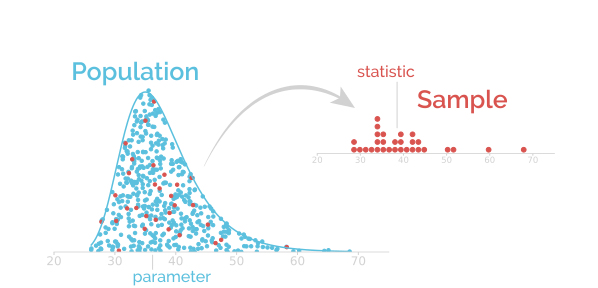
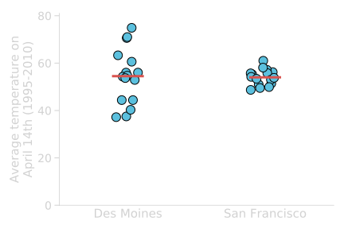

Making ‘Heads or Tails’ of Data
Understanding statistics:
the art of revealing your data
Khris Griffis
Understanding $\neq$ Knowing


Statistics Is
Collecting
Organizing
Summarizing
Communicating
Dealing with Uncertainty
OF DATA
So that we can make better, more mutedBluermed and critical decisions about the world around us.
Probably.
Goal of statistics
To answer a question about a population (of data).
In a perfect world, we would have access to the full population so we would be able to answer the question based on data collected on all the observational units of the population. We would know the value of the true statistic, i.e. the parameter, that we are interested in.
But we typically have just one or a few samples.
If we had $\infty$ number of friends, and they were all awesome, we could have them each conduct our same experiment in order to get an idea about the parameter of interest.
This approach is the concept of Frequentism.
Statistics is about using that single sample to make inferences about the population parameter.
Population data
Imagine a population of 500 students (all the possible observational units) and you're interested in selling them on the idea healthy food through advertisements.
Your first idea is to use television.
You need to know if this is viable, so you measure average time students spend watching TV.
This is an exploratory study and doesn't have a real hypothesis.
If we could collect data on all the students, then the data would look like this:
Sampling distribution
The reality is that many factors influence our ability to collect data. For example, we must provide incentive for students to let us monitor how much TV they actually watch. What if we can only afford to include 6 students?
We would randomly select 6 students, which would give us a representative sample to work with.
From this sample (n=6) we calculate the average time each student spends watching TV.
Our hypothesis / assumption we want to test is: $\bar{x}\approx\mu$.
You can imagine that if we had randomly selected another sample, the value of that $\bar{x}$ would have been a bit different (but still $\bar{x}\approx\mu$).
Frequentism says that if we randomly selected samples $\infty$ times, we would have a distribution of $\bar{x}$'s where each $\bar{x}\approx\mu$.
All of these possible statistics of interest define the
sampling distribution of the statistic.
If we had more money, we would collect a larger sample size and our estimate of the sampling distribution would have less uncertainty.
For parametric statistics, like mean and standard deviation, the formulas approximate the sampling distribution, though only if Normal assumptions are satisfied.
Because we are always skeptical that our data are not normally distributed, we use robust statistics, like the median, to estimate our average, i.e. central tendency.
Uncertainty
What the heck is uncertainty?
- Fear and trepidation
- Confusion
- Error
- A single value
- A measurable value
- A range of values
- A range of Possible outcomes.
Simulating Coin Flips
Is my coin fair?
- Flip the coin
- Count if we see Heads
- Repeat and repeat..
Proportions of Proportions
- A chance model is used to test if an observation can be predicted to have happened by random chance.
- Computer simulation allows us to rapidly build a chance model of an expected proportion.
- We can then take the proportion of our chance model that is as extreme and more extreme that our observed proportion.
- The chance model histogram is our Null Distribution and represents the expected proportion if all possible outcomes are equally probable.
Uncertainty
Uncertainty of Proportions
- Using a similar simulation as when constructing the Null distribution, we can simulate the uncertainty surrounding our observed statistic.
- We put a confidence level on our range on uncertainty, typically we use 95%.
- We construct this 95% confidence interval using resampling with replacement.
- That is, we throw all our observations in a big box and then draw out the same number we threw in, with replacement, then calculate our statistic (proportion) again.
- This process is called Bootstrapping and the underlying principal is that we are adding randomness to our observation in order to assess if randomness can explain our result.
- This method uses only our actual data to understand the role of random chance given that we only have information on our actual data.
- How does this compare to the Null distribution we constructed on the last slide? What assumptions are made here? What about in the Null?
The Null makes an assumption about all possible outcomes, e.g. they're all equally likely.
The bootstrap makes no assumptions, except that the actual data are real, and requires no assumptions about all the other outcomes.
Statistical Hypothesis
Generally, a scientific hypothesis is a specific statement proposed as an explanation for a phenomenon, regardless of truth.
A statistical hypothesis is a specific statement about a characteristic or parameter of the data.
- Does the association exist?
- Could it be by chance?
- Is there bias?
Solving World Health Problems
Cholera in the early 19th century:

Cholera Pandemic: It’s In The Air?

Miasma
- The prevailing dogma of the 19th century was that all disease and epidemics stemmed from “Bad Air”.
- “Bad Air”, called miasmata, is a poisonous vapor with suspended particles of decaying matter and a foul smell.
- Likely the cause of Cholera as poor, filthy and foul-smelling areas had miasmata AND they had Cholera.
It’s as simple as that…
John Snow
A British physician, considered one of the fathers of modern epidemiology.
He was skeptical of the Miasma theory and proposed a different hypothesis: that cholera was attributable to a self-replicating agent, probably ingested through contaminated water.

(15 March 1813 - 16 June 1858)
The River Thames

A source of fresh water, a means of free enterprise and a severely lacking government overreach.
Soho and Snows’s Statistics
Snow tracked the numbers of cholera fatalities in his neighborhood of Soho.

The most terrible outbreak of cholera which ever occurred in this kingdom.
-John Snow
| House | Address | Population | Fatalities |
|---|---|---|---|
| House #1 | 45 Lexington St | 8 | 5 |
| House #2 | 15 Broadwick St | 21 | 7 |
| House #3 | 61 Poland St | 4 | 1 |
| House #4 | 37 Broad St | 27 | 16 |
| House #5 | 48 Carnaby St | 11 | 3 |
| House #6 | 46 Beak St | 8 | 0 |
| House #7 | 43 Broad St | 44 | 9 |
Outliers in Soho
The mutedBluermation given by the outliers was important: it helped Snow rule out other possible sources of the epidemic besides pump water.
A workhouse had 535 inmates but almost no cases of cholera.
→ Snow discovered the workhouse had its own well
The 70 workers of the brewery on Broad Street also escaped cholera.
→ Mr. Huggins (owner) told Snow that the men drank the liquor they made or water from the brewery’s own well.
An elderly widow in West Hampstead (an area some distance away, which was free of cholera) and her niece died from cholera.
→ She liked the taste of Broad Street water, and she had a bottle brought to them every day from the pump
The Broad Street pump area
Area for which the Broad Street pump is the fastest trip to water
(on foot).
From Data to Administrative Action
On Sep 7, 1854, Snow took his research to the town officials and convinced them to take the handle off the pump.

Still, the scientific community was reluctant to believe his theory
What would be alternative explanations for the decrease in cholera fatal attacks?
Snow’s “Grand Experiment”
→ He needed stronger evidence.
Research question:
Is there a causal relationship between water supply and cholera?
What should Snow do to get “stronger” evidence?
- Bigger scale study? (generalization)
- More systematic comparison? (“Control” population)
Collecting a dataset
The population is the entire collection of observational units we are interested in. A sample is a subset of the population on which we record data.
Numerical summaries about a population are called parameters, and numerical summaries calculated from a sample are called statistics.
Experiment & Observational study
An
experiment is a study in which the researcher actively controls one or more of the explanatory variables.
An observational study is a study in which the researcher does not actively control the value of any variable but simply observes and record the values as they naturally exist.
Snow compared different exposure groups, but did not assign the exposure (contaminated water or not).
What kind of study is it?
Snow's "Grand Experiment"
=> He needed stronger evidence.
Research question:
Is there a causal relationship between water supply and cholera?
Observational units:
"Groups" of people
Variables:
- Occurence of cholera fatal attacks (outcome)
- Type of water supply (explains difference in outcome)
Explanatory & Response variables
A response variable is the variable about which questions are asked, it measures the outcome of the study.
An explanatory variable is any factor that can influence, explain or predict the response variable.
The response variable is usually called dependent, while the explanatory variable is sometimes called independent.
Does meditation help reduce stress?
Does sugar consumption increase hyperactivity?
Snow's analysis of deaths data


New Prevention Measures Enforced
Less people started to question the relevance of the germ theory to cholera.
New prevention and control measures developed to prevent cholera outbreaks (boiling water)
6 Steps Of A Statistical Investigation
Importance of visualization to better understand data
→ e.g. Soho epidemics map
Recap...
- Uncertainty
- Hypothesis
- Data
- Observational Unit
- Variable
- Outlier
- Population
- Sample
- Variable Relationship
- A range of possible outcomes... but we don't know exactly.
- Statement about a parameter of data.
- Collection of measurements.
- Subject from which data was collected.
- Come in types Categorical & Quantitative.
- Markedly different from the rest.
- EVERYBODY!
- A subset of a population.
- Response variables depend on Explanatory variables.
The mean
A common measure of central location is the (arithmetic) mean. It is sometimes called the average.
$\bar{x}=\sum x_{i}$
$\bar{x}$ for a sample (read "x-bar")
$\mu$ for a population
Which corresponds to:
$\bar{x}=(x_{1}+x_{2}+...+x_{n})/n$
$\bar{x}=(\textrm{sum of all the observations})/(\textrm{number of observations})$
The trimmed mean
A trimmed mean refers to the calculation of the mean after discarding given parts of a sample (or distribution) at the high and low end (typically discarding an equal amount of both).
Some people consider that the use of a trimmed mean "helps" eliminate the influence of data points on the tails that may affect the traditional mean.
| 1 | 23 | 19 | 24 | 17 | 26 | 20 | 23 | 89 | 82 |
$\bar{x}=(1+23+19+24+17+26+20+23+89+82)/10=32.4$
$\bar{x}_{trimmed}=(23+19+24+17+26+20+23)/7=21.7$
Be Careful!
The median
The median of a set of ordered data values is:
- the middle entry (for an odd number of entries)
- the average of the middle 2 values (for an even number
of entries)
mean of $(\frac{n}{2})^{th}$ and $(\frac{n}{2}+1)^{th}$ observations
$(\frac{n+1}{2})^{th}$ observation
The mode
The mode is the value that occurs most often in the dataset. If no value in the dataset is repeated, then there is no mode this particular dataset.
What is the mode in the dataset below?
| 4 | 5 | 9 | 5 | 11 | 7 | 5 | 3 | 7 | 8 | 6 | 5 | 12 |
Averages can be misleading
Pick your central descriptor wisely
Number of children per household in China (2012)
Mean: 1.55
Median: 1
More representative of the "typical" 2012 family
(One Child Policy)
Other locations
The minimum is the smallest number in the (sorted) dataset.
The maximum is the largest number in the (sorted) dataset
The Importance of Visualizing Data
Descriptive Statistics
Statistics allow us to reduce our data to fewer numbers, often a single value, in order to make describing our observations simpler.
But at what cost?Some common descriptors we use to describe data are:
- Mean and variants
- Median
- Mode
- Range
$\mu \text{ or }\bar{x}=\frac{1}{N}\sum_{i=1}^{N} x_i$.
$M\text{ or }\tilde{x}=\text{ The middle element of the sorted array.}$
Most frequent value in the data, can occur $\geq 0$ times.
$min(x),\text{ or }max(x)$
Statistics can be Robust
A robust estimator is resistant to biases caused by outliers present in the data.
The mean is a symmetric, non-robust descriptor while the median is a robust descriptor.
| 2.5 | 3.2 | 3.5 | 3.9 | 4.0 | 4.4 | 5.3 | 5.9 | 6.1 | 6.4 | 30 |
Mean: 4.52
Median: 4.2
Mean: 6.84
Median: 4.4
Describing the Shape
Central Tendency
Population vs. Sample: The Shape
You can imagine drawing a random sample from some population.
If the population is very large (or unknown) and our sample relatively small, how likely is our sample to look like the population?
How do we describe the shape of our sample?
First we need to come up with a way to view the values so that a shape can be determined.
Skewness
Skewness refers to shape of the distribution with regard to the tails.
Building a Histogram
Start with a dot-plot

Building a Histogram
The Choose a binning..

Interactively determining your bins is best!
*Use the dropdown menu to change the distribution type and think about which statistic would be best to use.
The standard deviation
A common measure of data variability is
the standard deviation (SD). It measures the spread of the data in a sample
$$s=\sqrt{\frac{1}{N-1}\sum_{i=1}^{N}\left( x_i - \bar{x}\right) ^2}$$
Variance
$s$ for a sample
$\sigma$ for a population
$s=\sqrt{\frac{(x_{1}-\bar{x})^2+(x_{2}-\bar{x})^2+...+(x_{n}-\bar{x})^2}{n-1}}$
$s=\sqrt{\frac{\textrm{sum of observed squared difference from sample mean}}{\textrm{number of observations - 1}}}$
The standard deviation
Let's consider 2 sets of data, both have a mean of 100
| Numbers | Mean | SD |
|---|---|---|
| 100, 100, 100, 100, 100 | 100 | 0 |
| 90, 90, 100, 110, 110 | 100 | 10 |
Set 1: all values are equal to the mean, so there is no variablility at all
Set 2: one value equals the mean and other four values are 10 points away from the mean. So the average distance away from the mean is about 10
Example for Set 2:
- Calculate the sample mean: $\bar{x}=100$
- For each observation, calculate the difference between the data value
and the mean: [-10, -10, 0, 10, 10] - Square each difference in step 2: [100, 100, 0, 100, 100]
- Sum the squared differences in step 3, and then divide this sum by $(n-1)$:
variance $s^2=\frac{400}{5-1}=\frac{400}{4}=100$ - Take the square root of the value in step 4: $s=\sqrt{100}=10$
Beware of the standard deviation
Like the mean, the standard deviation does not cope well with skewed distributions.

The SD is only useful in the context of the normal distribution

The Empirical Rule:
For any bell-shaped curve, approximately
- 68% of the values fall within 1 SD of
the mean in either direction
- 95% of the values fall within 2 SD of
the mean in either direction
- 99.7% of the values fall within 3 SD of
the mean in either direction
Misuse of SD is everywhere
The range
The range gives you the most basic mutedBluermation about the spread of a dataset. It is calculated by the (arithmetic) difference between the lowest and highest data value.
Interquantile range
The median divides the data into two equal halves (it is the $50^{th}$ percentile). If we divide each of those halves again, we obtain two additional statistics known as the first (Q1) and third (Q3) quartiles, which are the $25^{th}$ and $75^{th}$ percentiles.
Interquartile range: $\textrm{IQR} = Q3 − Q1$

A value is considered an outlier if it is:
or
larger than $Q3+1.5\times IQR$
Percentiles
The $k^{th}$ percentile is a value in the dataset that has $k\%$ of the data values at or below it and $(100 – k)\%$ of the data values at or above it.
Note:
Here our dataset contains 40 data points.
So each data point correspond to $\frac{100}{40}=2.5\%$ of the data.
Present your
(quantitative) data

Bar graphs are evil
1) Part of the range covered by the bar might have never been observed in the sample
Bar graphs are evil
2) They conceal the variance and the underlying distribution of the data
Bar graphs are evil
3) They are associated with (usually not defined) error bars
Different types, different meanings:
- Descriptive statistics (SD, range)
- Inferential statistics (SEM, CI)
Avoid making bar graphs
To reveal the distribution of the data:
- Display data in their raw form
- A dot plot is a good start
- Dynamite plunger plots conceal data
- Check the pattern of distribution of the values
About Figure 1:
- First set: Gaussian (or normal) distribution (symmetrically distributed)
- Second set: right skewed, lognormal (few large values). This type of distribution of values is quite common in biology (ex: plasma concentrations of immune or inflammatory mediators)”
Plunger plots only: who would know that the values were skewed [...] and that the common statistical tests would be inappropriate?”

"For better characterization of a sample, we prefer dots plots, or box plots for their ability to display a minimum of five measures of the underlying data."
Avoid making bar graphs
- Impact Factor: 12.575 (2015).
The JCI is one of the top journals in the “Medicine, Research & Experimental” category.
To maintain the highest level of trustworthiness of data, we are encouraging authors to display data in their raw form and not in a fashion that conceals their variance.
Presenting data as columns with error bars (dynamite plunger plots) conceals data. We recommend that individual data be presented as dot plots shown next to the average for the group with appropriate error bars (Figure 1).

Avoid making bar graphs
[...] the amount of mutedBluermation they provide is still limited to two values, the mean and the spread.
"For better characterization of a sample, we prefer dots plots, or box plots for their ability to display a minimum of five measures of the underlying data."
You've been warned before!
Dotplot
If the number of data is relatively small, showing directly the raw data and accompanying mean/median is best.
Boxplot
A boxplot is a graphical display of the five number summary for a quantitative variable. It shows the general shape of the distribution, identifies the middle 50% of the data, and highlights any outliers.
A boxplot includes:
- A box stretching from Q1 to Q3
- A line that divides the box drawn at the median
- A line from each quartile to the most extreme data value that is not an outlier. (if no outliers minimum and maxixum)
- Each outlier plotted individually
Boxplot (example)
A boxplot is a graphical display of the five number summary for a quantitative variable. It shows the general shape of the distribution, identifies the middle 50% of the data, and highlights any outliers.


Importance of data visualization
All of these data have:

Brief Review
Quantitative Analysis
Statistic
- Population mean: $\mu$
- Sample mean: $\bar{x}$
- Population variance: $\sigma^2$
- Sample variance: $s^2$
- Pop. standard deviation: $\sigma$
- Sample standard deviation: $s$
Calculation
- $\mu = \frac{1}{N}\sum_{i=1}^{N}x_{i}$
- $\bar{x}=\frac{1}{N}\sum_{i=1}^{N}x_{i}$
- $\sigma^2=\frac{1}{N}\sum_{i=1}^{N}(x_i-\mu)^2$
- $s^2=\frac{1}{N-1}\sum_{i=1}^{N}(x_i-\bar{x})^2$
- $\sigma=\sqrt{\frac{1}{N}\sum_{i=1}^{N}(x_i-\mu)^2}$
- $s=\sqrt{\frac{1}{N-1}\sum_{i=1}^{N}(x_i-\bar{x})^2}$
These statistics are known as parametric estimators because their entire purpose is to measure (metric: measure) the parameter (para: originating from) of the underlying distribution. To use them we need to satisfy some ASSUMPTIONS.
Gaussian Assumptions
- The underlying population is normally distributed.
- The sample distribution of the mean is normally distributed.
- The sample distributions themselves are normally distributed.
- Each observation is independent of all others.
- The underlying population has infinite members.
Gaussian Assumptions
The Assumption of Normality claims that the sampling distribution of the mean is normal or that the distribution of means across samples is normal.
So what's the big deal with Confidence intervals?
NHST is all nice and sweet, but in the end, we spend time answering a question coming from the "wrong angle": instead on focusing on what our data are, we focus on where our data would stand if the null hypothesis was true.
Determining confidence intervals is a way at looking at the same thing than NHST, but using what we know (observed statistic), not an hypothesized situation ("what would [something] be if [something]").
But again, this involves looking directly at the sampling distribution of your statistic of interest! (obtained directly from the population of your data, not an hypothesized null distribution)
Confidence intervals
We want to determine the sampling distribution of our statistic of interest, to know how variable it is and get an estimate of the true value of the parameter.
We do not have the full population, so we are using the sample as a surrogate for the population (bootstrap resampling, with replacement).
Confidence intervals
The sampling distribution obtained will be centered at the statistic of interest calculated from the original sample(s).
The $\alpha$ level chosen will determine which interval to consider.
Estimate of the true value of the parameter
Can be used for hypothesis testing
Is the parameter of the
null distribution inside the confidence interval?
Confidence intervals
A confidence interval for a parameter is an interval computed from sample data by a method that will capture the parameter for a specified proportion of all samples.
The parameter is fixed (from population)
The statistic is random (depends on the sample)
The interval is random (depends on the statistic)
A 95% confidence interval will contain the true parameter for 95% of all samples
Drawing bootstrap samples from a sample is one of the method to compute the confidence intervals.

Statistical analysis
All the statistical problems we have seen could be solved using two main types of approaches:
Null Hypothesis Testing
How unusual would it be to get results as extreme (or more extreme) than those observed, if the null hypothesis is true?
95% confidence intervals
What is an estimate of the range of possible values of the true parameter? Is the null hypothesis parameter contained in this interval?
Question: In what ways do each of these infer/test statistical significance?
Randomization distribution & p-value
A randomization distribution is the distribution of sample statistics we would observe, just by random chance, if the null hypothesis were true.
The p-value is the probability of getting a statistic as extreme (or more extreme) as that observed, just by random chance, if the null hypothesis is true.
The p-value measures evidence against the null hypothesis
The p-value is calculated by finding the proportion of statistics in the randomization distribution that fall beyond (one or both direction) the observed statistic
p-value common thresholds
A small p-value casts doubt on the null hypothesis/model used to perform the calculation.
A p-value
$\leq{0.10}$
$\leq{0.05}$
$\leq{0.01}$
$\leq{0.001}$
is generally considered
to be
some
fairly strong
very strong
extremely strong
evidence against the null
Formal decisions:
p-value $<\alpha$ Reject $H_0$
p-value $\geq\alpha$ Do not reject $H_0$
Random sampling is king in StatisticsLand
The different possible study designs

Relationships in Data
Relationships or Independence?
What kinds of relationships are there between two variables?
To answer this, we have to consider how an experiment was conducted.
Univariate data had these properties:
- A single variable, consisting of an independent sample, was considered in isolation.
- Single measurements were collected from each observational unit.
- The sample was collected such that each value was independent of the others.
- The sample represented a single "snapshot" in time for the variable of interest.
Multivariate (2 or more variables) have these properties:
- Each variable represents a different measurement made for an observational unit.
- Variables may or may not be independent from each other.
- Individual variables have the same properties as Univariate variables.
- The sample is a collection of variables, each variable can represent "snapshots" in time.
Recall Pearson's Product-Moment Correlation
For the population: $\rho_{X,Y}=\frac{cov(X,Y)}{\sigma_X \sigma_Y}$ and the sample: $r=r_{xy}={\frac {1}{n-1}}\sum _{i=1}^{n}\left({\frac {x_{i}-{\bar {x}}}{s_{x}}}\right)\left({\frac {y_{i}-{\bar {y}}}{s_{y}}}\right)$.
- $\rho,\, r$ are unitless on the range [-1,1].
- Correlation coefficient gives the direction and strength of the relationship between X and Y.
- If $r$ is high, positive or negative, the points lie closer to an imaginary line drawn through the data $\rightarrow$ linearly dependent.
- If we rescaled the data so that each axis was on the same scale, say [-1,1], then $r$ would be the slope of that imaginary line.
- When $r\sim 0$, we say X and Y are independent.
- X and Y must each be approximately normally distributed.
- X and Y must each be homoscedastic, i.e. equal variance across their scale.
When Data Are Not Normal?
We can use ranks to transform the data into an appropriate-looking space and then use Pearson's correlation $\rightarrow$ Spearman's Correlation.
Rank
$\rightarrow$

What happened to the distributions in X and Y?
The distributions became uniform.
Homoscedasticity
A dataset is homoscedastic if the variance at any given portion is the same as all others, i.e. constant.
- X is roughly uniform, or potentially Normal-ish.
- Y is roughly uniform, or potentially Normal-ish.
- A distribution can be made of any nearby subset of points and the variability stays the same no matter where in the data you draw the points.

The Regression Line
Usually, rather than estimating predictions using a graph, we directly use the equation of the regression line.
Equation for a line:
$\hat{y}= \beta_0 + \beta_1x$ Remind you of: $y = mx +b$?
- $\beta_0$: y-intercept at $x=0$
- $\beta_1$: slope of the line (often called $m$)
Predicting the response variable from the explanatory
variable:
$\mathrm{Response}= \beta_0 + \beta_1 \times \mathrm{Explanatory}$
Why do we want the regression line?
What can we do with it?
- Prediction (by interpolation).
- Physical interpretation of $\beta_0$ and $\beta_1$.
- Model selection (think about changes in either $\beta_0$ or $\beta_1$)
- "Explain Variance" (ANOVA)
- How does Regression work?
- Find the best fit line!
How does linear regression work?
The line that fits the data best is the one where the residuals are close to zero.
Instead of working directly with the residuals, we usually try to minimize the sum of the square of the residuals:
$SS_{residuals}=\sum_{i=1}^{n}(y_i-\overset{\hat{}}{y_i})^2$
The use of linear regression analysis
There are 3 major uses for regression analysis:
Causal analysis: it might be used to identify the strength of the effect that the independent variable(s) have on a dependent variable. Typical questions are what is the strength of relationship between dose and effect, sales and marketing spend, age and income, etc...
Forecasting: it can be used to forecast effects or impacts of changes. That is regression analysis helps us to understand how much will the dependent variable change, when we change one or more independent variables. Typical questions are how much additional $Y$ would I get for one additional unit $X$.
Prediction: it can be used to predict trends and future values. The regression analysis can be used to get point estimates. Typical questions are what will the price for gold be in 6 month from now? What is the total effort for a task X?
Paired Data
What if our variables ARE related and we can't use correlation to infer anything about the population?
This is an experimental design method called a dependent model.
Resampling for paired data NHST
To obtain the sampling distribution of the paired differences (or ratio):
- Calculate the effect size (difference or ratio) of the explanatory variable on each pair
- Randomly assign the sign (or ratio order [1, r$^{-1}$]) for the effect sizes
- Calculate the mean (or median) with that new arrangement of signs (or ratio order)
- Repeat steps #2-3 10000 times (we obtain 10000 effect sizes that we could have observed if the explanatory variable didn't have any effect)
95% Confidence intervals
The differences (or ratios) are a one quantitative sample. We can extract the 95% CI by drawing bootstrap samples, as previously seen.
We are 95% confident that for competitive swimmers and triathletes, wetsuits increase maximum swimming velocity by an average of between 0.066 and 0.089 meters per second.
$\chi^2$ Tests
We can use $\chi^2$ in multiple ways
Think about correlation
For bivariate, quantitative data, we test the independence by asking if $r=0$
What if the data are categorical?
| Cedars Sinai | UCLA Harbor | UCLA Olive View | UCLA Ronald Reagan | UCLA Santa Monical | Kaiser LA | |
|---|---|---|---|---|---|---|
| Alive | 20193 | 743 | 419 | 4752 | 5284 | 1280 |
| Dead | 4458 | 207 | 84 | 1065 | 1135 | 38 |
ANOVA Does Even More
One-Way ANOVA
One-Way ANOVA considers multiple groups belonging to a single categorical family called a factor level, i.e. sandwiches, treatment types, etc.
$$\mathcal{F}=\frac{\color{orange}{SS_{between}}}{\color{lightblue}{SS_{Within}}}$$
One-Way Repeated Measures ANOVA
Just as we discussed with before $\sim$ after in two-group NHST, ANOVA has special methods for dealing with repeatedly measuring from a single subject. It takes the form of:
$$\mathcal{F}=\frac{\color{orange}{SS_{between}}}{\color{lightblue}{(SS_{Within}-SS_{random})}}=\frac{SS_{between.timepoints}}{SS_{fixed}}$$
N-Way ANOVA
We aren't limited to one level (plus time) and can model multiple factors, though it starts getting complicated because we have new kinds of terms to discuss call interactions. Note that each new factor level will get its own $\mathcal{F}$-statistic.
$$\mathcal{F}=\frac{\{ SS_{b.group1},\, SS_{b.group2},\, \ldots ,\, SS_{b.groupN},\, \{ SS_{\color{orange}{interactions}}\} \} }{SS_{Within}}$$
N-Way Repeated Measures ANOVA
Just like in the One-Way approach, we now have to consider the effects of time and remove the random effects, i.e. the within subject variation.
$$\mathcal{F}=\frac{\{ SS_{b.time},\, SS_{b.group2},\, \ldots ,\, SS_{b.groupN},\, \{ SS_{\color{orange}{interactions}}\} \} }{SS_{Within}-SS_{random}}$$
As we add more and more factors, we call this factor analysis and it starts to take on a new shape. We will not be discussing it to that depth.
Understanding the $SS_{terms}$
Statistic: $$\mathcal{F}=\frac{\color{orange}{SS_{between}}}{\color{lightblue}{SS_{Within}}}=\frac{\color{orange}{\partial^2(fit,null)}}{\color{lightblue}{\partial^2(fit,data)}}$$ Effect Size: $$R^2=\frac{\color{orange}{\partial^2(fit,null)}}{\color{seagreen}{\partial^2(data,null)}}$$
RM Statistic: $$\mathcal{F}=\frac{\color{orange}{\partial^2(fit,null)}}{\color{lightblue}{\partial^2(fit,\color{yellow}{reduced})}}$$ RM Effect Size: $$\eta^2_{p}=\frac{\color{orange}{\partial^2(fit,null)}}{\color{purple}{\partial^2(reduced,null)}}=\frac{SS_{Between}}{SS_{Total}}$$
Fertilizer Selection
We measured the weight of plants after a fixed amount of growth-time in normal soil (control), or with 2 fertilizer treatments (1 & 2).
Fertilizer Selection
We conclude that our samples are not likely from the same population. Time for Post-hoc analysis.
Fertilizer Selection
Compare each pairwise group by 2 group bootstrap.
Fertilizer Selection
| Comparison | Effect Size | Confidence Interval | P-value | P-adjusted (BH) | $H_0$ Rejected |
|---|---|---|---|---|---|
| Control vs Treatment 1 | 0.371 | [-0.205, 0.94 ] | 0.2272 | 0.2272 | False |
| Control vs Treatment 2 | -0.494 | [-0.92, -0.066] | 0.0461 | 0.06915 | False |
| Treatment 1 vs Treatment 2 | -0.865 | [-1.388, -0.327] | 0.0076 | 0.0228 | True |
Post-hoc Testing Problem
In a test at $\alpha = 0.05$, there is a 5% chance of getting a false positive if the null hypothesis is true. In 100 tests, each at $\alpha = 0.05$, we "expect 5 false positives" if all 100 null hypotehses are true, but really, the probability of getting $k$ false-positives is determinable through the binomial distribution, $p(k\, |\, \alpha)$.
We can also determine the probability of getting k false positives by bootstrap. Create a deck with 100 cards, 5 of which are red, then resample with replacement and count the red cards.
Post-hoc Testing Problem
So you have to be super careful when making multiple P-value generating tests!